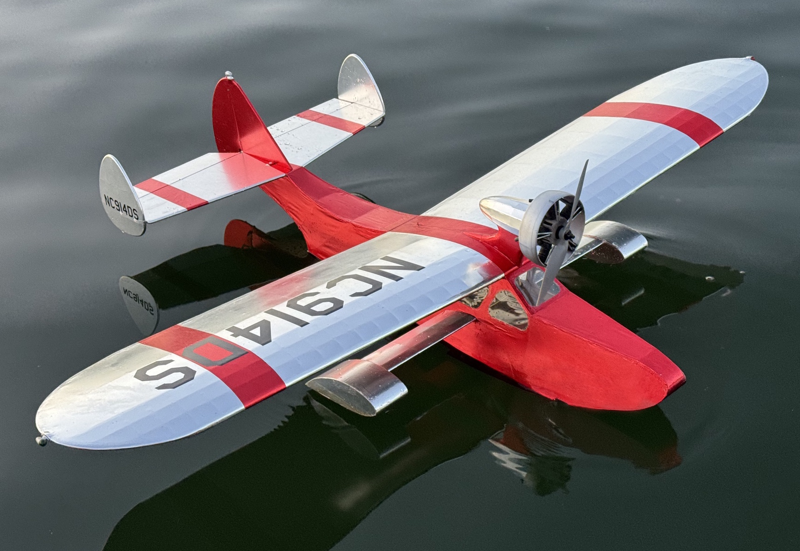
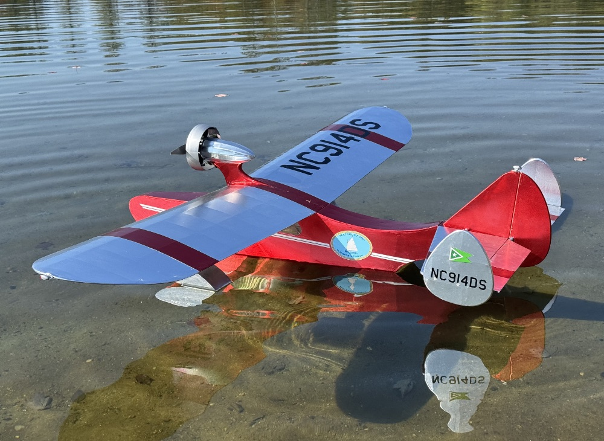
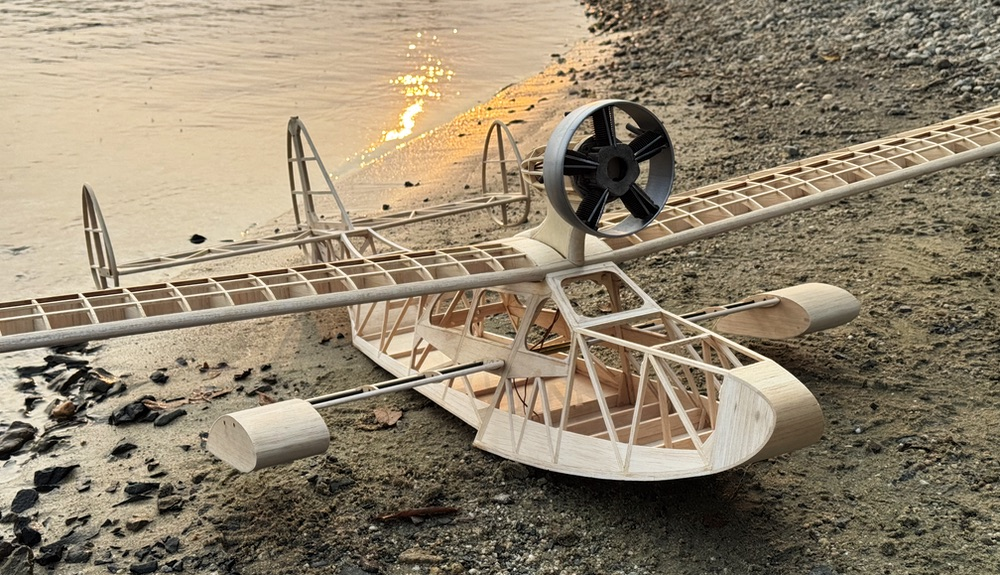
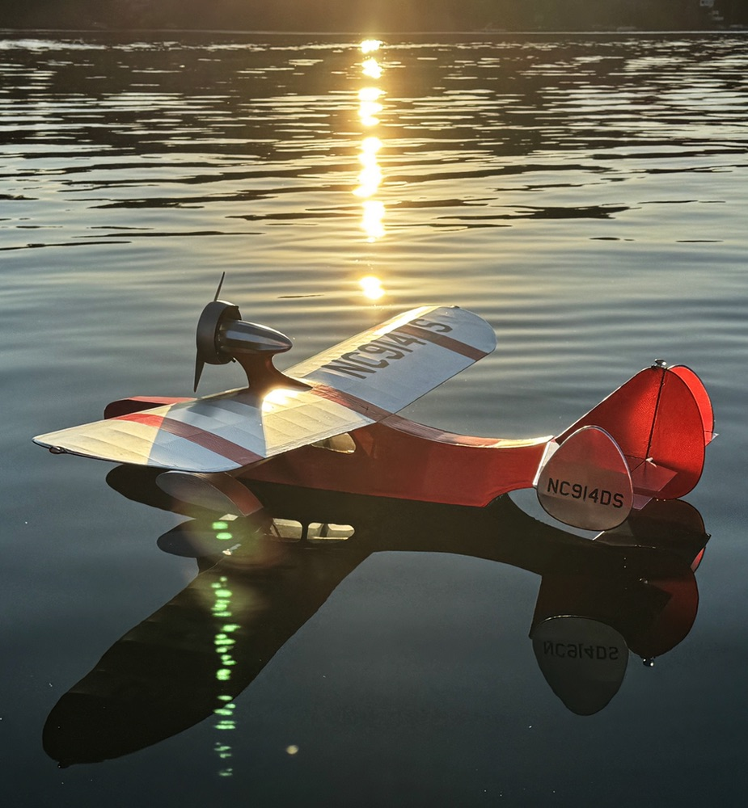
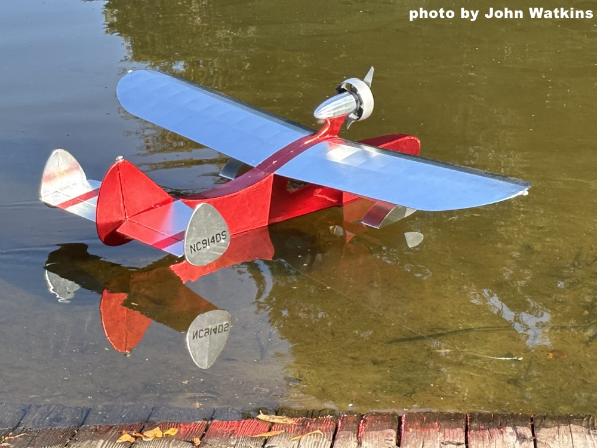

|
 |
Drake 65
Welcome!
The Drake 65 was inspired by two of my favorite models. Most obviously is Ken Willard's 0.15 powered 48-inch Drake II, which first appeared as a plan feature in the October 1980 issue of Model Aviation. Willard's elegant design instantly captivated my imagination, and I've built three others through the decades before this latest version. The triple tail is reminiscent of Boeing's Art Deco tour de force, the Model 314 Clipper flying boat, sparking memories of travel's more glamorous days from years past. In truth, adding the center fin and rudder was Willard's most expedient option as he adapted an earlier Free Flight version for radio control! |
|---|---|
|
The primary design goal for my fourth Drake was to be large and light enough for slow and stately flight during the sunset calm, and perhaps even a dawn adventure or two. I envision this model as representing a potential homebuilt project from the 1960s or 70s, ideal for exploring remote waterways in the back country.
With the outline decided, inspiration for the performance profile arrived via Fred Reese's Electric Kitten, which has been one of my favorite models to fly over the last few years. The Kitten's light wing loading has been a pleasure in quiet air, and I wanted to duplicate its "feel" with the larger Drake. A bit of early number juggling suggested that a 65-inch span would give the generous wing I desired for the planned stick-and-stringer type structure, while still allowing to keep it robust enough for regular flying. Yes, the Drake's wing loading is higher, but its larger size helps match the Kitten's flight profile. As with the Kitten, most of my Drake flying has been a series of relaxed circuits from a local pond, trying to perfect my watery arrivals. I've yet to run out a pack in flight, with times up to 30 minutes between launch and recovery. I typically change the packs somewhere around 20 minutes though, to avoid getting stranded off shore as I feel out its capabilities. I am very pleased with this latest Drake so far. There are still a few details awaiting attention - as is often the case with such things - and I am crossing them off the list as time allows. Most obvious in these images will be the evolving color scheme. |
 The Drake visits Vermont in early October with the color scheme nearly complete, while the lead image shows an interim scheme in mid September, a week after her first public flights at the 2025 NEAT Fair. |
|
This is not a complex model to fly or equip. Like the original, it is flying with a standard 3-channel set up, with just rudder, elevator and throttle control. A pair of Hitec HS-65MG servos are doing the honors, driving the rudder with an old-school pull-pull system using radio dial tuning cord. A Sullivan S503 Flexible Gold-N-Rod takes care of the elevator. Yes, the red set. I had to maintain color coordination! A Futaba 2.4GHz 10C transmitter provides the link from my thumbs. Plans for Ken Willard's original Drake II are still available from Model Aviation, as are those for his even earlier Free Flight version. You won't have to wait long if you would prefer a Drake 65 of your own. I am currently cleaning up my working drawings and will make the finished plan available through the Flying Models plan service well before we turn the page on 2025. As with the Kitten, I will post additional photos, videos and building notes here as time allows. In the meantime, Click the Mike Cripps video at right to enjoy some scenes of the Drake flying at the 2025 NEAT Fair. Full screen viewing is available. |
Drake 65 at its first NEAT Fair in flying trim
|

|
 Bare model structures are usually compelling, and I couldn't resist posing it on the dock with these clouds at NEAT 2024. The image above was taken about an hour before I began covering. |
Power system purchased from Innov8tive Designs. |
 |
|---|---|
 |
The interim scheme gleams above, as the sun sets over the Drake's home lake in Connecticut. Anticipation of such flying sessions carried my progress throughout the build.
Fellow modeler John Watkins captured the image at left as the Drake taxied out for its first public flight at the 2025 NEAT Fair. The registration numbers on the tip fins and stabilizer trim stripes are the only hints of the intended final scheme. |
|
Copyright 2025, Thayer Syme. All rights reserved | |